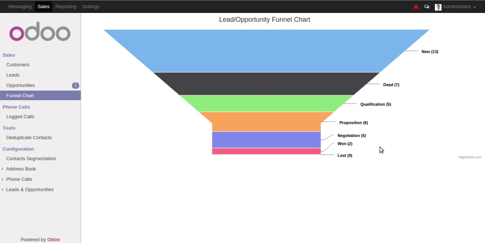

Funnel Chart For Lead and Opportunity
A funnel chart is mainly used by sales personnel to monitor the stages of the lead and opportunity.

This module uses the funnel chart from the well-known Charting Library
Charts
.
For any questions, queries, support and development